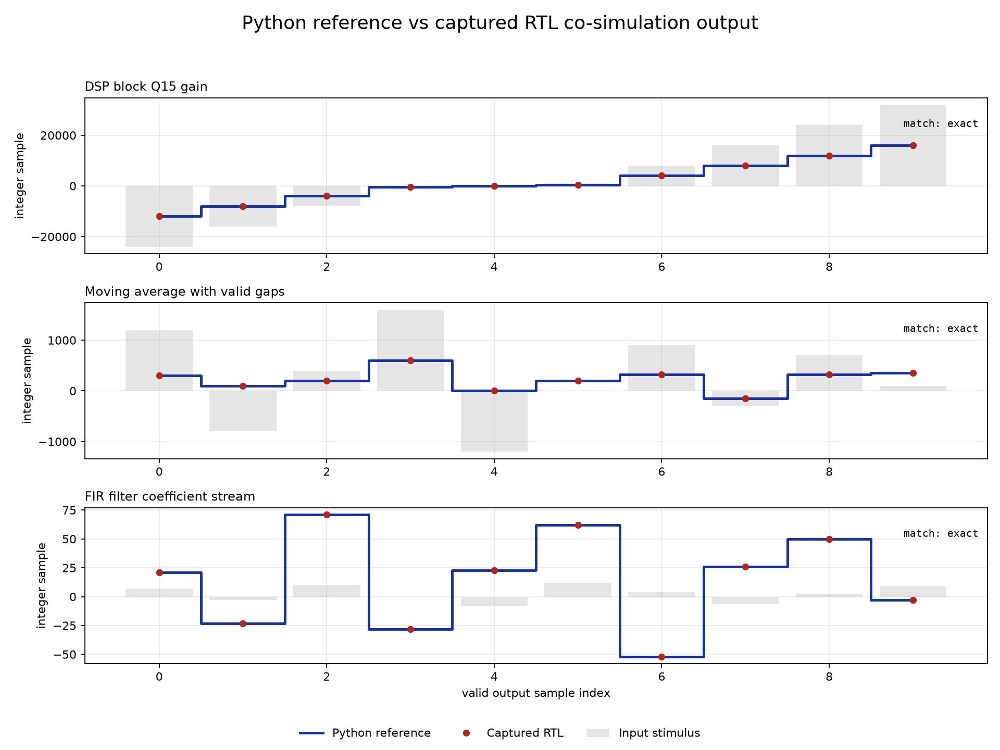

Generate signed integers, boundary cases, valid gaps, and coefficient updates from fixed seeds.
Independent verification project
Reusable RTL verification for signal-processing hardware.
I built a Python verification environment that drives Verilog implementations with generated stimulus, compares captured samples against deterministic integer reference models, and produces evidence that makes the first incorrect result easy to locate.
Verification problem
Signal-processing blocks are simple to describe but easy to misimplement at signed limits, valid gaps, saturation boundaries, and coefficient changes.
What I wanted to prove
A passing simulation should mean more than “the waveform looks close.” The harness needed to generate repeatable edge cases, preserve cycle-valid behavior, and compare every captured integer against the same reference used by the behavioral model.
How I structured it
Virtual instruments generate stimulus, device adapters present a consistent interface, and validation definitions package pass/fail criteria. The same bench concepts can exercise behavioral devices or Verilog modules without changing the test intent.
Captured evidence
The primary artifact compares Python reference output with the samples recorded from three RTL implementations.

Verification strategy
Each stage has a narrow responsibility, which keeps simulator plumbing separate from the behavior under test.
Calculate expected integer results with explicit width, rounding, and saturation behavior.
Reset the design, drive handshakes, and record only samples marked valid by the RTL.
Require exact equality and report the first mismatch with enough context to reproduce it.
What the framework validates
The suite combines deterministic examples, randomized streams, simulator checks, and report artifacts.
RTL behavior
- Signed boundaries, negative values, and saturation
- Moving-average wraparound and output-valid gaps
- FIR coefficient writes and variable tap counts
- Fixed-seed randomized sample streams
Engineering feedback
- Exact reference-versus-capture comparisons
- First-mismatch diagnostics instead of visual inspection
- Per-module lint and direct simulator checks
- Terminal, tabular, and plotted validation reports
Boundary: This is an independent verification project focused on simulation correctness and reusable test architecture. It does not claim synthesis, timing closure, formal proof, or silicon signoff, and it is separate from my employer’s production test systems.